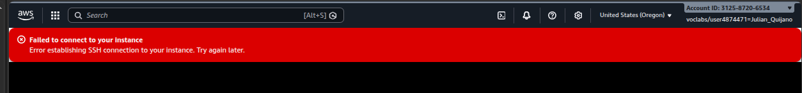
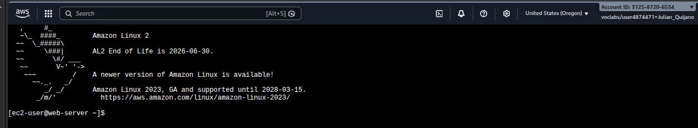
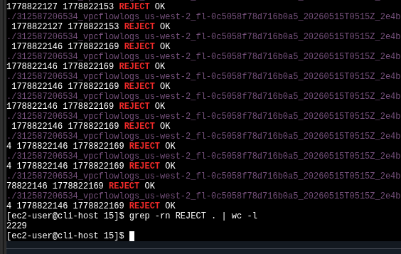

Issue #1 — Web timeout
The public subnet route table was missing the default route to the Internet Gateway.
Traffic could enter the VPC but had no way out. Fixed with aws ec2 create-route.
Diagnosed and fixed two connectivity failures in a custom VPC using only the AWS CLI, then used VPC Flow Logs stored in S3 to audit the rejected traffic produced during the troubleshooting process. The lab forces a methodical walk through the layered security model of a VPC: Security Group → Route Table → Network ACL.
Two VPCs were pre-built with broken networking. The job was to make the cafe web server reachable from the public internet, fix SSH access, and then explain what happened using flow logs.
The public subnet route table was missing the default route to the Internet Gateway.
Traffic could enter the VPC but had no way out. Fixed with aws ec2 create-route.
The Security Group allowed port 22, but a Network ACL ingress rule (number 40) was
denying SSH at the subnet level. Removed with delete-network-acl-entry.
VPC Flow Logs captured every blocked packet while troubleshooting. Counted
2229 REJECT records across the captured window with
a single grep | wc -l pipeline.
Created an S3 bucket and a flow log on VPC1 capturing ALL traffic (accepted and rejected) before starting the troubleshooting. This is what made the forensic analysis at the end possible.
us-west-2 to receive the
log files. The lab required suffixing with six random digits to avoid global name
collisions.describe-vpcs query, then
attached a flow log targeting that VPC with --traffic-type ALL and
--log-destination-type s3.ACTIVE via describe-flow-logs.# 1. S3 bucket for flow log delivery
aws s3api create-bucket \
--bucket flowlog###### \
--region us-west-2 \
--create-bucket-configuration LocationConstraint=us-west-2
# 2. Resolve VPC1 ID by tag
aws ec2 describe-vpcs \
--query 'Vpcs[*].[VpcId,Tags[?Key==`Name`].Value,CidrBlock]' \
--filters "Name=tag:Name,Values='VPC1'"
# 3. Create the flow log (ALL traffic, S3 destination)
aws ec2 create-flow-logs \
--resource-type VPC \
--resource-ids <vpc-id> \
--traffic-type ALL \
--log-destination-type s3 \
--log-destination arn:aws:s3:::flowlog######
# 4. Verify status = ACTIVE
aws ec2 describe-flow-logscreate-flow-logs sometimes prints an
"Unsuccessful" entry in its JSON output. The lab guide explicitly
says to ignore it — the flow log still gets created. describe-flow-logs
is the source of truth, not the create response.
The lab forbade the AWS Console for diagnosis — everything had to be done with
aws-cli. This is the part of the lab worth keeping: the diagnostic order
(SG → Route Table → NACL) and the exact CLI calls that confirm or rule out each layer.
Pasting WebServerIP in the browser results in a timeout. The instance
is reported as running by describe-instances, so the
problem has to be at the network layer.
Browser timeout on http://<WebServerIP>. No response, no
connection refused — pure black hole.
nmap shows no open ports from the CLI Host. SG permits 80/22.
describe-route-tables on the public subnet shows only the local
VPC route (10.0.0.0/16). No 0.0.0.0/0 entry.
The public route table is missing the default route to the Internet Gateway. The subnet is "public" by name but not by configuration.
Add a route for 0.0.0.0/0 targeting the VPC's IGW with
aws ec2 create-route. Web responds immediately after.
# Install nmap on the CLI Host and probe the web server
sudo yum install -y nmap
nmap <WebServerIP>
# Inspect the Security Group attached to the web server
aws ec2 describe-security-groups --group-ids 'WebServerSgId'
# Inspect the route table associated with the public subnet
aws ec2 describe-route-tables \
--route-table-ids 'VPC1PubRouteTableId' \
--filter "Name=association.subnet-id,Values='VPC1PubSubnetID'"
# Fix — add the missing default route to the IGW
aws ec2 create-route \
--route-table-id 'VPC1PubRouteTableId' \
--gateway-id 'VPC1GatewayId' \
--destination-cidr-block '0.0.0.0/0'EC2 Instance Connect to the Cafe Web Server returns "Failed to connect to your instance". The Security Group is correct, the route table is now correct, the instance is running. Only one layer left to check.

EC2 Instance Connect: "Error establishing SSH connection to your instance." SG inbound allows 22, route table is now correct.
describe-network-acls on the public subnet shows an ingress rule
with RuleNumber: 40 denying TCP traffic.
NACLs are stateless and processed by rule number in ascending order. The DENY at #40 fires before any later ALLOW, killing SSH at the subnet edge.
Delete entry #40 with delete-network-acl-entry --ingress. The
next SSH attempt succeeds and hostname returns web-server.
# Dump every NACL entry attached to the public subnet
aws ec2 describe-network-acls \
--filter "Name=association.subnet-id,Values='VPC1PublicSubnetID'" \
--query 'NetworkAcls[*].[NetworkAclId,Entries]'
# Fix — remove the offending ingress rule (rule-number 40)
aws ec2 delete-network-acl-entry \
--network-acl-id 'acl-id' \
--ingress \
--rule-number 40
# Confirm by reconnecting via EC2 Instance Connect, then:
hostname
web-server
[ec2-user@web-server ~]$ prompt confirms the fix landed on the correct instance
The flow log captured every packet rejected during the broken window. Downloaded the
files from S3, decompressed them, and used grep to count and filter.
mkdir flowlogs && cd flowlogs
# Recursively copy every flow log object from the bucket
aws s3 cp s3://flowlog######/ . --recursive
# Files land under: AWSLogs/<AccountId>/vpcflowlogs/<region>/yyyy/mm/dd/
cd AWSLogs/<AccountID>/vpcflowlogs/us-west-2/yyyy/mm/dd/
# All files are gzipped — decompress in place
gunzip *.gz
lsThe header row of each file documents the column order. The columns that actually mattered for this analysis:
| Col | Field | Used for |
|---|---|---|
| 4 | srcaddr | Filtering by the analyst's home public IP (the source of the failed SSH attempts). |
| 5 | dstaddr | The web server's ENI private address. |
| 7 | dstport | Filtering to 22 to isolate SSH traffic. |
| 10 | start (Unix epoch) | Translatable with date -d @<ts>. |
| 11 | end (Unix epoch) | Same — to get a human-readable window. |
| 13 | action | ACCEPT or REJECT — the grep target. |
From the broadest count to the most specific filter, narrowing down to the exact failed SSH attempts:
# Total REJECT records captured during the broken window
grep -rn REJECT . | wc -l
2229
# Narrow to anything mentioning port 22 that was REJECTed
grep -rn 22 . | grep REJECT
# Final filter — only my home IP's failed SSH attempts
grep -rn 22 . | grep REJECT | grep <my-public-ip>
# Cross-check the ENI ID seen in the log matches the web server's NIC
aws ec2 describe-network-interfaces \
--filters "Name=association.public-ip,Values='<WebServerIP>'" \
--query 'NetworkInterfaces[*].[NetworkInterfaceId,Association.PublicIp]'
# Convert Unix timestamps to local time
date -d @1554496931
date
grep -rn REJECT . | wc -l returns 2229 — every packet the broken NACL + missing route dropped during the labgrep | wc) gave a
fast, account-wide audit of how much traffic was being silently dropped. In a
real environment this scales poorly — the lab points to Amazon Athena
as the next step: ingest the same S3 prefix as a table and run SQL over it.
Every AWS CLI / shell call used in the lab, in one block.
aws ec2 describe-vpcs --filters "Name=tag:Name,Values='VPC1'" — find a VPC by tag.aws ec2 create-flow-logs --resource-type VPC --traffic-type ALL ... — start capturing.aws ec2 describe-flow-logs — check status (ACTIVE).aws ec2 describe-instances --filter "Name=ip-address,Values='<IP>'" — find the instance behind a public IP.aws ec2 describe-security-groups --group-ids '<sg-id>' — inspect SG rules.aws ec2 describe-route-tables --filter "Name=association.subnet-id,Values='<subnet-id>'" — see which route table a subnet uses and its routes.aws ec2 describe-network-acls --filter "Name=association.subnet-id,Values='<subnet-id>'" — list every NACL rule on a subnet.aws ec2 describe-network-interfaces --filters "Name=association.public-ip,Values='<IP>'" — map a public IP back to an ENI ID.aws ec2 create-route --route-table-id <rt> --gateway-id <igw> --destination-cidr-block '0.0.0.0/0' — add default route to the IGW.aws ec2 delete-network-acl-entry --network-acl-id <acl> --ingress --rule-number 40 — drop a blocking NACL ingress rule.aws s3 cp s3://<bucket>/ . --recursive — pull every object from the bucket.gunzip *.gz — decompress in place.grep -rn REJECT . | wc -l — count dropped packets.grep -rn 22 . | grep REJECT | grep <ip> — isolate failed SSH for a specific source.date -d @<unix-ts> — convert epoch timestamps to local time.sudo yum install -y nmap + nmap <ip> — quick reachability probe.0.0.0.0/0 entry pointing at an Internet Gateway.--traffic-type ALL + S3 destination is a
zero-instrumentation way to get a packet-level audit trail for any VPC.AWSLogs/<account>/vpcflowlogs/<region>/yyyy/mm/dd/ in S3,
and queryable with plain grep for small windows.
The lab forces an honest CLI-only diagnostic on a deliberately broken VPC. The
productive pattern is to stop guessing at the console and instead query each layer
of the network stack with describe-* calls — the answer is always in
one of them, and the symptom alone (timeout vs. connection refused vs. SSH banner
failure) usually points to which layer is responsible.
Flow Logs close the loop: every assumption made during the fix can be retroactively
confirmed by counting REJECTs in the bucket. For larger volumes the same data lands
cleanly in Athena, turning the log into a SQL-queryable table — but for a 2229-line
window, grep | wc -l is enough.